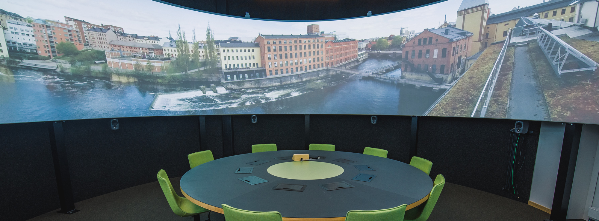

Towards the Combination of Visualization and Sonification for Cylindrical Displays

Venue. AVI (2022)
Materials.
DOI
PDF [link]
Abstract. Immersive environments provide a physical space for audio-visual data analysis. An example of such an environment is the Norrköping Decision Arena, which provides a cylindrical display together with a circular sound system. This paper sets recommendations on what kinds of visualization would benefit from being displayed in this kind of environment and how sonification could be used as a complement to enable exploratory data analysis. Three visualizations are presented as potentially interesting for the presentation on a cylindrical display: theme rivers, radial visualizations, and parallel coordinates.
Link to this page: